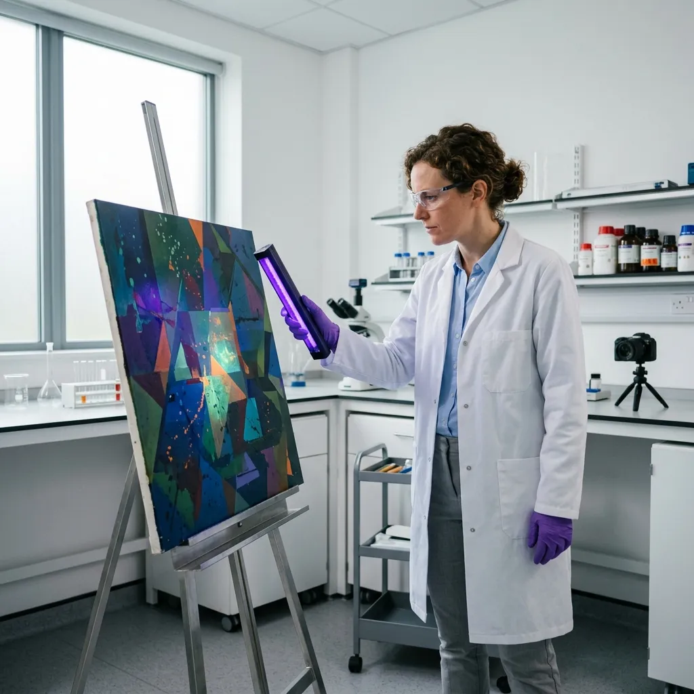

Conservation Science.
Empirical, non-destructive analysis and material stabilization.
The preservation of contemporary art requires precise scientific intervention. Our diagnostic team employs advanced, non-destructive analytical techniques to understand the exact material composition and structural vulnerabilities of each piece. By identifying active degradation vectors on a molecular level, we engineer bespoke stabilization strategies that permanently arrest decay without compromising the artist's original intent.
Non-Invasive Diagnostics
Before any physical intervention is authorised, every incoming acquisition is subjected to a comprehensive suite of non-invasive diagnostics. We utilise high-resolution X-ray fluorescence (XRF) spectroscopy to map the exact elemental composition of surface pigments, allowing our conservation scientists to identify the specific synthetic binders and volatile resins utilised by the artist. This data is critical for anticipating long-term chemical instability. Furthermore, we deploy advanced infrared reflectography to penetrate the uppermost layers of a canvas, revealing the underlying structural framework and any hidden preliminary sketches. This precise, purely optical analysis provides a complete topographic and molecular profile of the artwork without requiring our technicians to physically touch the fragile surface. By diagnosing these material vulnerabilities early, we can formulate an empirically sound conservation protocol that entirely pre-empts structural failure or pigment delamination.
Structural Interventions
When structural degradation has already compromised a work, our conservation team executes targeted, clinical interventions to stabilise the asset. Flaking or delaminating paint layers require immediate consolidation to prevent catastrophic pigment loss. We achieve this by precisely injecting museum-grade, fully reversible synthetic adhesives beneath the compromised strata, using micro-syringes under high-magnification stereomicroscopes. This meticulous procedure restores adhesion between the pigment layer and the substrate without altering the surface topography. Additionally, for large-scale canvases exhibiting severe tension loss or structural sagging, we implement controlled strip-lining techniques. This reinforces the weakened margins of the original canvas using inert synthetic fabrics, restoring proper planar tension to the work. Every adhesive and structural material introduced during these interventions is chemically stable, non-yellowing, and empirically documented, ensuring that future conservation scientists can safely reverse our procedures without damaging the original organic matrix.
Arresting Biological Degradation
Historical frames, wooden armatures, and organic sculptures are highly susceptible to biological degradation from fungal spores and woodboring insects. Traditional fumigation methods rely on aggressive chemical agents that often leave toxic residues or accelerate the decay of adjacent delicate pigments. Isocline Preservation mitigates these biological threats through the deployment of highly controlled anoxic (oxygen-deprived) environments. When active pest damage or mould colonisation is detected, the affected asset is sealed within a custom-engineered, multi-layer barrier film. We systematically purge the ambient oxygen from the enclosure, replacing it with pure nitrogen until the oxygen concentration falls below 0.1 percent. Maintaining this anoxic state for a period of twenty-one to twenty-eight days completely eradicates all biological life—from active woodworm larvae to dormant fungal spores—without subjecting the artwork to harmful chemical compounds or risking secondary structural damage.
Registrar Consultation
Isocline Preservation provides bespoke storage and restoration logistics for international institutions, commercial galleries, and private contemporary collections. We invite museum registrars and collection managers to submit detailed condition reports or photographic documentation for a preliminary technical assessment. Our conservation science team will review the specific material vulnerabilities of your assets and provide a comprehensive proposal for deep-strata vaulting or clinical intervention. To initiate a consultation or request an intake quote, please contact our primary operational hub. Secure your volatile contemporary works within the most stable geological environment in the United Kingdom. Contact our Cheshire facility at registrar@isocline-preservation.co.uk or telephone our logistics desk at +44 (0) 1606 558 920.
Submit Condition Report